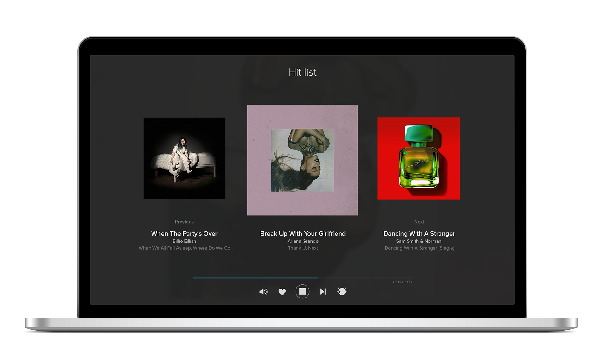

Novi način slušanja muzike je stigao!
Muzički Player je naš najnoviji projekat, čiji je cilj da učini slušanje muzike mnogo lakšim, bez reklama!

Saznaj više
Muzički Player je naš najnoviji projekat, čiji je cilj da učini slušanje muzike mnogo lakšim, bez reklama!
Saznaj više
Pridruži se danas jednim klikom!